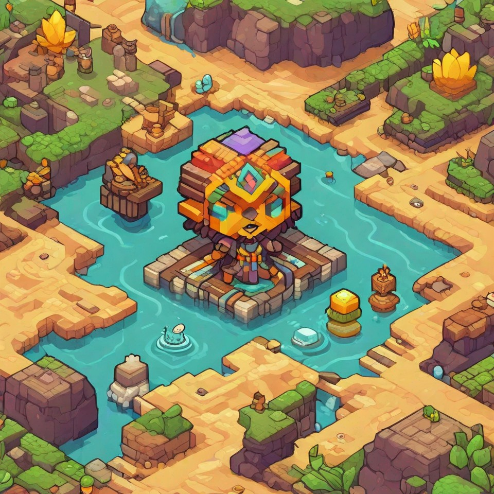
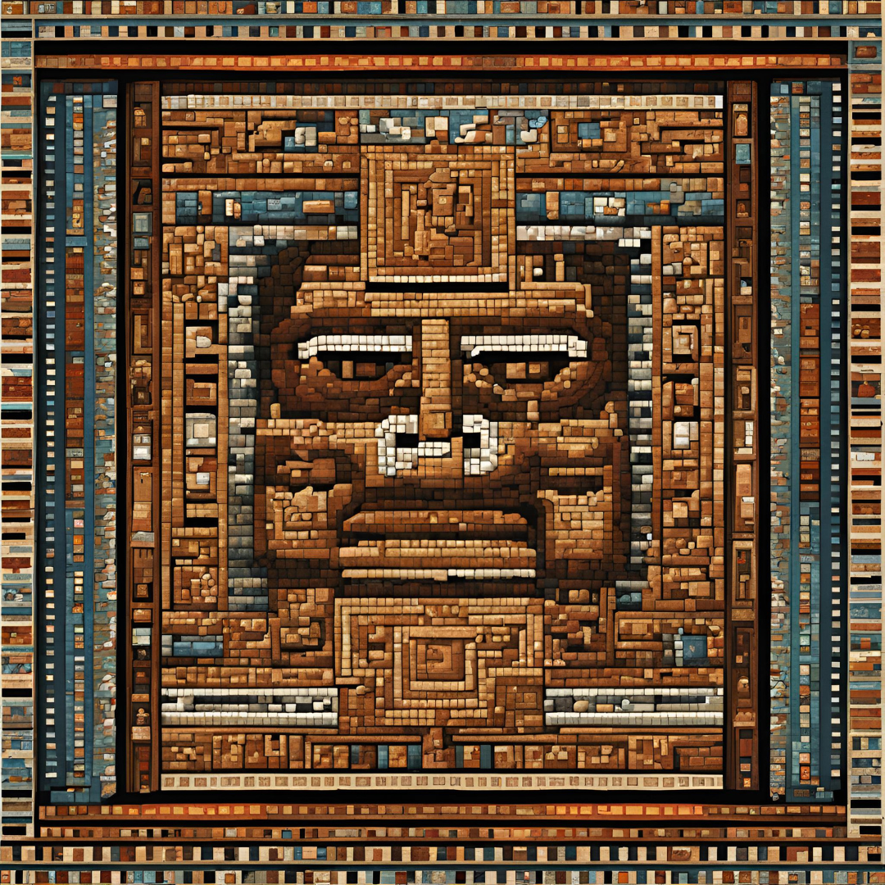
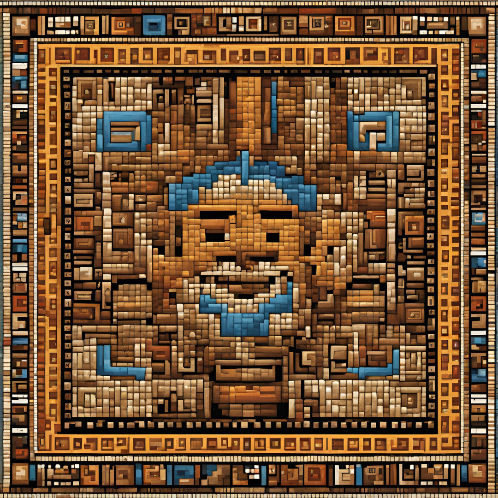
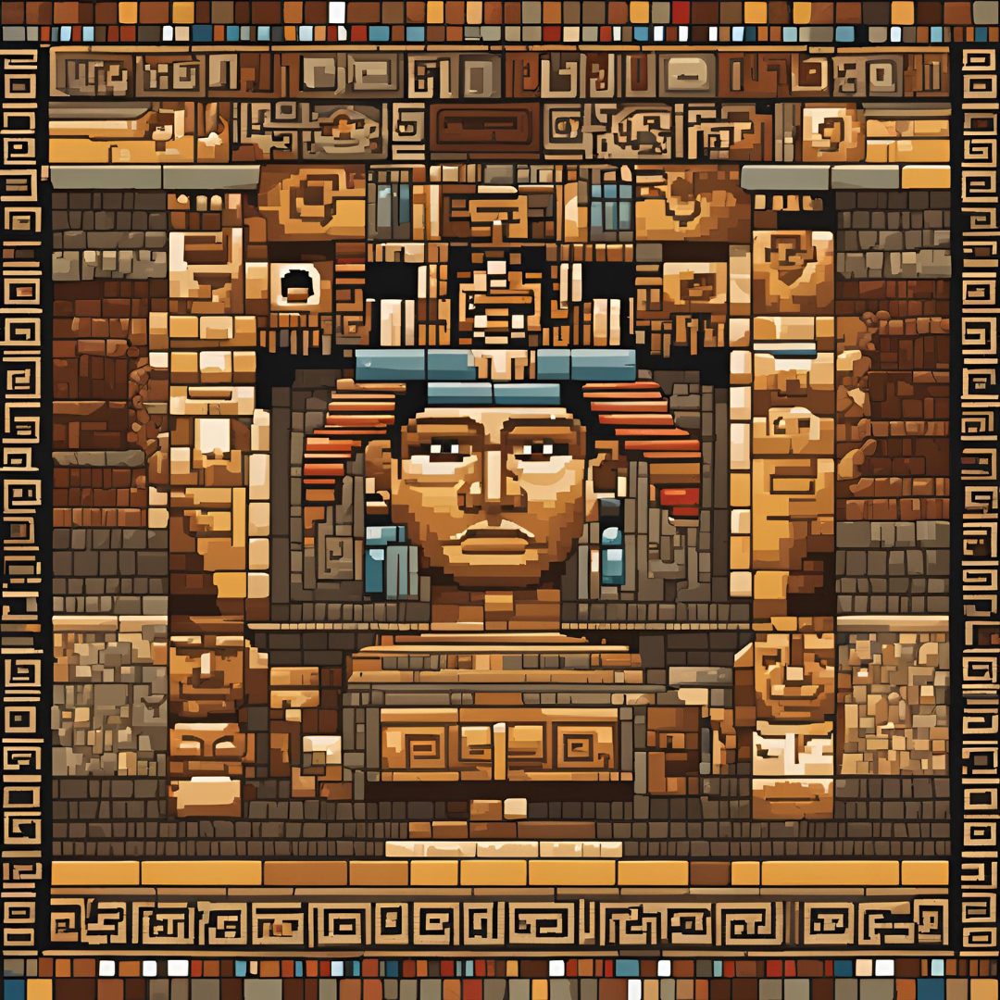

O coração latino-americano
Nossos olhos se abrem para um passado remoto, um período envolto em mistério e sabedoria nas vastas extensões das Américas pré-coloniais. Aqui, onde a natureza selvagem se estende até onde a vista alcança, cinco grandes civilizações floresceram de maneiras únicas e interligadas: os Incas, Maias, Guaranis, Nazcas e Chavín.
Cada uma dessas culturas guardava segredos ancestrais, poderes mágicos que estavam entrelaçados com a essência de seu ser. Esses dons conferiam a eles a sagrada responsabilidade de proteger a natureza.
Os Chavín foram os primeiros a desvendar os poderes que a natureza lhes oferecia. Eles podiam se conectar profundamente com a natureza, usando seus dons para curar qualquer enfermidade. Ergueram templos e centros cerimoniais notáveis, onde a presença da Divina Natureza podia ser sentida. Eles criaram o lendário Altar do Coração da Floresta, uma estrutura majestosa que irradia sua influência para todo o entorno. Porém, a inveja de outras tribos levou à necessidade de proteger esse local com magia, e o povo Chavín foi condenado a uma vida errante pela floresta. Dividiram-se em Caciques do Coração e Pajés do Coração, sendo que os primeiros só eram avistados pelos escolhidos, enquanto os Pajés viajavam de tribo em tribo, oferecendo curas.
Os Nazcas, por sua vez, descobriram a capacidade de se conectar com a natureza aquática. Com sua sabedoria natural, aprenderam a cultivar alimentos de maneira rápida e eficaz, predominando peixes e batatas. Eles foram responsáveis por expandir a floresta, levando água para regiões anteriormente áridas e improdutivas. No entanto, a inveja levou à ganância, resultando na perda do controle da água, deixando poucos sobreviventes que mantiveram viva a lenda da Jornada do Coração.
Os Maias, ao entrar em contato com os Nazcas, descobriram o poder da Floresta. Aprofundaram sua conexão com a natureza, tornando-se capazes de fazer crescer uma semente em uma árvore em menos de um minuto. Eles eram tão harmonizados com a Floresta que os animais os escutavam, ajudando-os a prosperar. No entanto, ao usarem os animais para subjugar outros povos, a natureza reagiu, condenando-os à escravidão. Apenas alguns sobreviveram, conhecidos como os Maias Amarelos, os últimos mensageiros. Com o tempo, civilizações ao sul e ao norte da floresta voltaram a se encontrar.
Os Guaranis eram ágeis como o vento, tendo aprendido a controlar os elementos como raios e trovões. Eles se dispersaram de maneira singular, mas mantiveram um propósito comum: proteger a floresta, afastando aqueles de coração impuro com ventos e tempestades. Eles e os Incas compartilharam a responsabilidade de preservar as outras civilizações remanescentes e de estabelecer a Jornada do Coração.
Os Incas, dotados do dom de controlar a Terra, aprenderam com as culturas anteriores e respeitam os lugares sagrados. Eles transferiram o Coração da Floresta para um local seguro e quase inacessível. No entanto, com o tempo, se afastaram de sua missão, com apenas alguns poucos continuando a proteger o coração da floresta. Eram poucos e distantes entre si.
Essas antigas civilizações desempenhavam um papel crucial e misterioso na floresta. A Jornada do Coração acontecia a cada 20 anos, convocando jovens escolhidos dessas civilizações para cumprir uma missão de profundo significado. Eles eram guardiões do equilíbrio, protetores da harmonia entre os povos e a natureza. Seus corações pulsavam em sintonia com a Terra, respondendo ao chamado da natureza para preservar os segredos que mantinham o mundo em equilíbrio.
Os guerreiros da 4ª Jornada
Aracy, a ventania
Sed ut perspiciatis unde omnis iste natus error sit voluptatem accusantium doloremque laudantium, totam rem aperiam eaque ipsa, quae ab illo inventore veritatis et quasi architecto beatae vitae dicta sunt, explicabo. Nemo enim ipsam voluptatem, quia voluptas sit, aspernatur aut odit aut
Huascar, a rocha
Sed ut perspiciatis unde omnis iste natus error sit voluptatem accusantium doloremque laudantium, totam rem aperiam eaque ipsa, quae ab illo inventore veritatis et quasi architecto beatae vitae dicta sunt, explicabo. Nemo enim ipsam voluptatem, quia voluptas sit, aspernatur aut odit aut
Balam, o frutífero
Sed ut perspiciatis unde omnis iste natus error sit voluptatem accusantium doloremque laudantium, totam rem aperiam eaque ipsa, quae ab illo inventore veritatis et quasi architecto beatae vitae dicta sunt, explicabo. Nemo enim ipsam voluptatem, quia voluptas sit, aspernatur aut odit aut
Taína, as profundezas
Sed ut perspiciatis unde omnis iste natus error sit voluptatem accusantium doloremque laudantium, totam rem aperiam eaque ipsa, quae ab illo inventore veritatis et quasi architecto beatae vitae dicta sunt, explicabo. Nemo enim ipsam voluptatem, quia voluptas sit, aspernatur aut odit aut
Unay, o amor
Sed ut perspiciatis unde omnis iste natus error sit voluptatem accusantium doloremque laudantium, totam rem aperiam eaque ipsa, quae ab illo inventore veritatis et quasi architecto beatae vitae dicta sunt, explicabo. Nemo enim ipsam voluptatem, quia voluptas sit, aspernatur aut odit aut